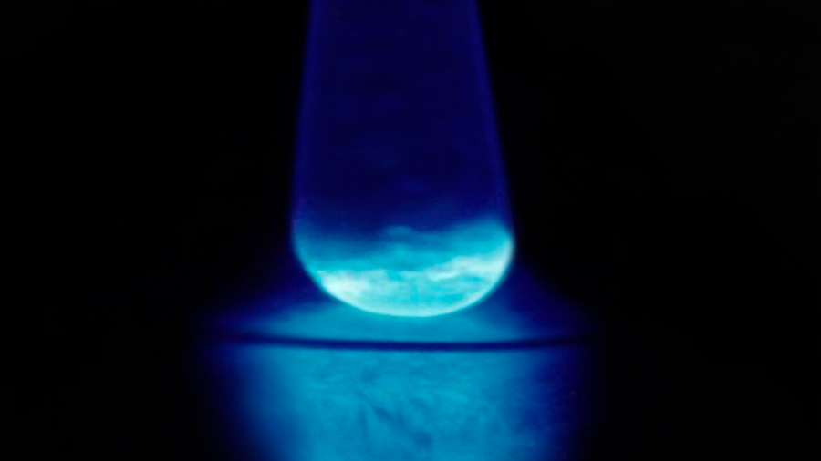

El einstenio (Es) es un metal sintético altamente radiactivo con un número atómico de 99. Brilla en la oscuridad debido a su intensa radiactividad y se utiliza principalmente en la investigación científica, incluida la producción de elementos más pesados.

El einstenio presenta una serie de propiedades químicas distintivas a pesar de las muy pequeñas cantidades disponibles para la investigación. En soluciones acuosas, suele formar iones trivalentes, característica que comparte con otros actínidos. El elemento tiende a adoptar un estado de oxidación +3, aunque se han observado otros estados de oxidación en condiciones especializadas. Experimentos de laboratorio, realizados bajo estrictos protocolos de seguridad, han demostrado su reactividad con el oxígeno y los halógenos.